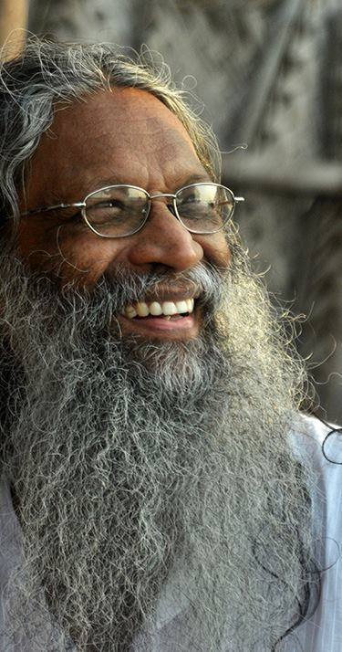

<section class="row">
<section class="col-md-12">
    
    <section class="col-md-4 col-sm-4 about">
    
    </section>
    <section class="col-md-5 col-sm-6 ml-10 about-section" ng-switch on="nav">
        <section class="col-md-12 animate-switch" ng-switch-when="SOS">
    <h2 class="font-heading">School of Santhi</h2>
     <p>Founded in 1992 by Master Santhi Prasad, School of Santhi focuses on improving and transforming people’s lives by disseminating the science of yoga in its entirety, blending ancient wisdom with modern thoughts. The mission is to spread the spiritual knowledge of transformation that could lead the world towards harmony and peace, love and liberation. Yoga is an effective instrument to achieve the aim of seeing the world as one single entity where we have to coexist, grow together and liberate. </p>

<p>Since the start, the School teaches traditional Yoga for serious spiritual seekers on a regular basis under the guidance of Master Santhi Prasad, our spiritual leader and an inspiring Guru. Santhi is an exponent of Indian spirituality who has over 50 years of experience in studying, practicing and teaching various forms of Yoga like Kundalini Yoga, Siva Raja Yoga, Swara Yoga, Hatha Yoga etc.. He has formulated his own system of spiritual practices based on the essence of Samkhya philosophy, Kundalini Yoga, Swara Yoga, Raja Yoga, Jnana Yoga and his own experience.</p>
  <p>School of Santhi offers Teacher Training courses, workshops and various other programs based on Santhi’s formulations, from time-to-time. We are recognised by Yoga Alliance, International Yoga Federation and Dept of Yoga - Tamilnadu Sports University Board. Our Master Santhi Prasad is an honorary lifetime member of World Yoga Council.</p>  
             <section class="col-md-12 col-sm-12"> <section class="col-md-6 col-sm-6 col-sm-offset-3 col-md-offset-3 pad-0"><section class="col-md-4 col-sm-4 text-center pad-2"></section><section class="col-md-4 col-sm-4 text-center pad-2"></section><section class="col-md-4 col-sm-4 text-center pad-2"></section></section></section>
</section>
        <section class="col-md-12 animate-switch" ng-switch-when="ELE">
    <h2  class="font-heading">Santhi - Early Life and Education</h2>
     <p>Santhi’s rich experience in yoga and indian spirituality is a serious learning affair that started at the age of 5. Born on September 22, 1948 to Shri. Purushothaman and Shmt. Sarojam in Trivandrum, Kerala, Santhi hails from a family that was closely connected to great spiritual Yoga Masters like Thycaud Ayyavu  Swami, Chattampi Swamikal and Narayana Guru. </p>

<p>His grandfather, Yogi Padmanabhan Vaidyan was a renowned yogi, musician and a practitioner of traditional indian medicine and was very close to Chattampi Swamikal. The family members, influenced by Chattampi Swamikal, maintained an atmosphere which facilitated discussions on spirituality and art, and the tradition continues from there. </p>
<p>He grew up listening to his grandmother and father, narrating the lives of Swami Rama, Swami Vivekananda, Shri. Chattambi Swamikal, Shri. Ayyavu Swamikal, Shri. Ramana Maharishi, Shri. Aurobindo, Shri. Ramakrishna and his great grand uncle who took Sanyas from Swami Vivekananda.</p>
<p>As a child, Santhi was deeply fascinated by the life stories of these great spiritual masters. He was always curious to seek out the mysteries of the universe and was constantly questioning about the stars, moon, sun, galaxies, universe etc.  </p>
<p>As a part of the family tradition, he was initiated into Siva Raja Yoga by his father. He practiced Hatha Yoga as a child and learnt the basics of Kundalini Yoga and Patanjali’s Yoga Sutra during his teenage years.</p>
<p>Santhi holds Bachelor’s degrees in Botany and Law from Mahatma Gandhi College, Trivandrum and Government Law College, Trivandrum. He was a practicing lawyer for some time and later joined the Kerala legislative assembly and worked there for 22 years. He was parallely involved in theatre arts, writing, directing and staging plays, highlighting the importance of conservation of nature and human values. </p>

</section>
         <section class="col-md-12 animate-switch" ng-switch-when="SPJ">
    <h2 class="font-heading">Santhi - The Spiritual Journey</h2>
     <p>Santhi was always interested in wise men and Masters. He travelled far and wide spending sleepless nights meeting great spiritual masters and listening to their teachings. He spent years, travelling to the Kodachadri mountains, Gokarna, the Chamundi hills of Mysore, Agasthya koodam, the deeper jungles of Western ghat mountains and the great Himalayas.</p>

<p>His unquenched fire for inner search lead to the creation of ‘Viswa Santhi Mission’ with Raja Yogi Atmaram in 1982. In 1984, Santhi also founded ‘The Centre for Conservation of Humanity’ with his friend Raman Nair and a few other close associates. He was actively involved in the protection of nature and humanity. </p>
<p>During this long spiritual search and the many pilgrimages in India, he came across many remarkable people, known and unknown spiritual Masters. He received direct spiritual teachings from Maharishi Mahesh Yogi, Madhavan Pillai Swami, Guru Vasuki, Ramananda, Balakrishna Pillai Swamikal, Shri. Krishna Adiga, Shri. Nattuvam Parama Sivam, Chidanantha Swami of Kollur, Bhagvan Rajaneesh (Osho), Shri Balahari Baba of Bhoj Vasa in Gomoug
,Swami Ganga Das of Gangotri, Narayana Swamikal of Mookambika, Swami Rajendran of Mayi Amma Samadhi, Poonthura Avadhootha Swamikal, Nainan Swami of Thakkala, Madhavan Pillai Swami of Thirumala.
</p>
<p>He studied the different paths of yoga and spirituality from various great Masters,
<br/>* Learnt Mantra chanting from Shmt. Lekshmi Kalyani, Santhi’s grandmother and wife of Siva Raja Yogi Padmanabha Bhagavathar
<br/>* Learnt Hatha Yoga from Ramananda Saraswathi of Kollur
<br/>* Learnt Hatha Yoga and Swara Yoga from Guru Vasuky
<br/>* Learnt Jnana Yoga and Samkhya from Madhavan Pillai Swamikal
<br/>* Studied Nature cure system from Swamy Ramakrishna
<br/>* Initiated in Transcendental Meditation by Shri Subrahmony of Maharishi's Institute of Creative Intelligence
<br/>* Learnt the secrets of Spandana and initiated into meditation by Bhaskara Pillai Swamikal of Kowdiar 
<br/>* Initiated in Kundalini Yoga by Balakrishna Pillai Swamikal
<br/>* Initiated in Tantric Sadhanas by Sri Krishna Adiga, Chief Priest of Kollur Mookambika Temple
 </p>
             <p>Though Santhi has been with many masters, he considers Shri. Bhaskara Pillai Swamikal as his spiritual mentor. He met Bhaskara Pillai Swamikal on Guru Purnima, a day devoted to the Masters. Santhi recollects his meeting with him,</p>
            
<blockquote class="blockquote">
  <p class="mb-0"><i>Swami was quite ordinary in his ways and we remained awake the whole night. He was talking about Pranic Spandana (Pulsations), Spandana Upanishad and its significance in the spiritual evolution of a seeker. By sunrise, I went along with him. From that moment onwards I have never felt the need for another Master and I have stopped hunting for Spiritual Masters.</i></p>
</blockquote>

</section>
        <section class="col-md-12 animate-switch" ng-switch-when="SIE">
    <h2 class="font-heading">Santhi - The Inner Enquiry</h2>
     <p>During his years of search and pilgrimages all over India, Santhi learnt the essence of ancient Indian wisdom.</p>
<p>In 1987, he took a sabbatical from work for directing a film based on the search of a youth. This was a turning point in Santhi’s life. This break helped him devote his full attention to spirituality. During this period, he was exploring the causes of human suffering.</p>
            <p> his intense inquiry, he understood the causes and reasons for the psychological suffering of man. He understood the problems of conflict, its causes and reasons that are rooted in concepts, beliefs and ideals. He clearly saw the games played by the mind for the upkeep of the self-projected images. He could clearly distinguish between dreams and reality.</p>
<p>This was the period of formulation of his philosophy. He experienced the grace of nature and became confident to be free. The cleansing process that started years before within him came to a culmination. He started to live an ordinary life unbiased by spiritual prejudices. </p>
<p>In the due course, with the blessings and guidance of Bhaskara Pillai Swamikal, Santhi formulated his own system of spiritual practice and Yoga Counseling. He explored into the essence of Samkhya philosophy, Kundalini Yoga, Swara Yoga, Raja Yoga and Jnana Yoga in depth and delineated his own system of Yoga therapy.</p>
 <p>In 1992, he moved to Sweden and started delivering spiritual discourses in Europe. In 1993, he established a school for yogic sciences and spirituality, ‘School of Santhi’ in Trivandrum, India with an objective of blending ancient wisdom with modern thoughts. In the same year his students in Italy started the Italian School of Santhi and a year later his Swedish followers started the Swedish School of Santhi. </p>
            <p>School of Santhi now has various branches spread across the world and continues to successfully teach Yoga and spirituality for serious spiritual seekers on a regular basis.</p>
</section>
        <section class="col-md-12 text-center mt-10"><a href="#santhispeaks">Santhi Speaks</a> | <a href="#/contactus">Get in touch with Santhi</a></section>
    </section>
    <section class="col-md-2 col-sm-1"><nav class="bs-docs-sidebar hidden-print affix col-md-12 col-sm-12 pad-0"> <ul class="nav bs-docs-sidenav"> <li class="side-nav" ng-class="nav == 'SOS'?'active':''"> <a  ng-click="nav = 'SOS';">School of Santhi </a></li> <li class="side-nav" ng-class="nav == 'ELE'?'active':''"> <a ng-click="nav = 'ELE';">Santhi - Early Life and Education</a></li><li class="side-nav" ng-class="nav == 'SPJ'?'active':''"> <a ng-click="nav = 'SPJ';">Santhi - The Spiritual Journey</a></li><li class="side-nav" ng-class="nav == 'SIE'?'active':''"> <a ng-click="nav = 'SIE';">Santhi - The Inner Enquiry</a></li></ul></nav></section>
   </section>
    
</section>